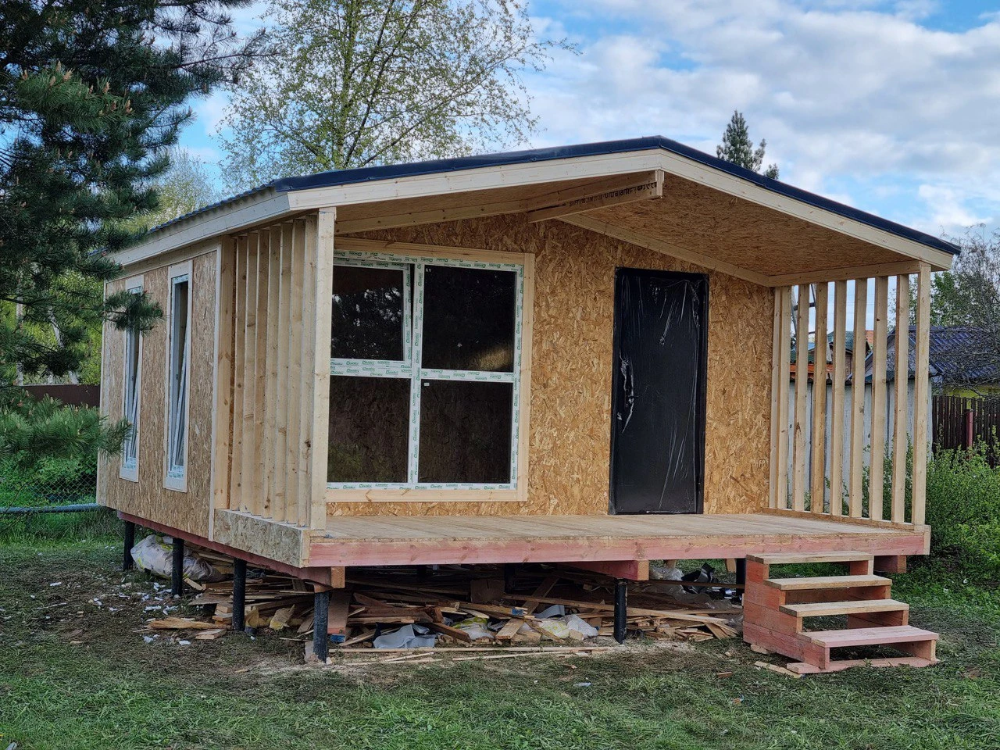
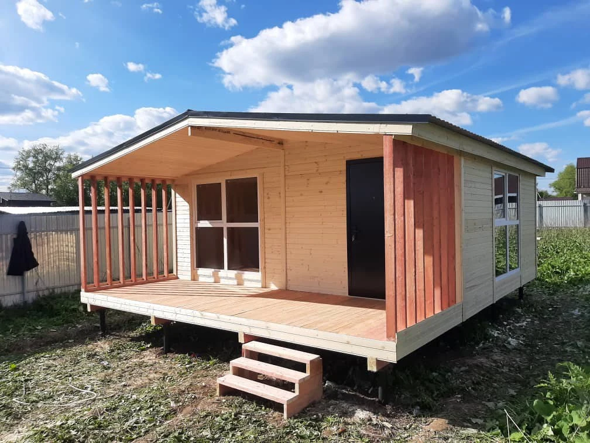

Холодный контур
Для тех, кто хочет начать с конструкции и продолжить обустройство самостоятельно.
- Силовой каркас и кровля
- Наружная отделка
- Окна и входная дверь
Цены каталога на 02.11.2026, их нужно подтвердить. Фундамент, доставка, монтаж и инженерия считаются в смете.
Сравните планировки, комплектации и цены. Выбирайте без заявки.
Кадры из архива компании
Сравните фасады, планировки и цены выбранной комплектации.
Попробуйте другую площадь или сбросьте фильтры.
Сравниваем габариты и цены комплектаций из каталога на 02.11.2026. Состав на фото и итоговую смету на участке нужно подтвердить.
Сравните три комплектации и выберите, какую часть работ доверить производству. Состав уточняется для каждой модели.
Для тех, кто хочет начать с конструкции и продолжить обустройство самостоятельно.
Основа с утеплением и изоляцией. Для дальнейшей внутренней отделки.
Для тех, кто хочет получить дом с завершёнными внутренними поверхностями.
Конструкция уже дополнена утеплением и изоляцией. Внутренние поверхности и инженерные решения обсуждаем отдельно.
Фундамент, инженерные системы, доставка и монтаж проверяются в смете выбранного дома. Сравнение показывает принцип комплектаций.
Смотреть цены моделейПосмотрите реальные фотографии производства: от подготовки древесины до хранения. Для каждого процесса — вопрос, который поможет обсудить качество именно вашего дома.
Уточните, из какого пиломатериала будет собран дом и как контролируют его влажность. Попросите зафиксировать материал в спецификации.
Хотите увидеть, как всё устроено?
Фотографии построек из архива компании. На них видны материалы, детали и то, как дом выглядит вне визуализации.


Сначала договариваемся о том, что строим, из чего и за какую стоимость. Потом переходим к производству.
Обсуждаем участок, размер дома, планировку и режим использования.
Уточняем комплектацию и состав сметы, включая дополнительные работы.
Готовим материалы и согласовываем порядок работ по вашему проекту.
Организуем доставку и сборку на участке на согласованных условиях.
Компания рассматривает индивидуальные проекты. Расскажите о нужном размере, расположении окон, входа и террасы: возможность изменений и стоимость уточняются по проекту.
В каталоге показана цена комплектации из открытого каталога на дату подготовки концепции. Актуальную стоимость, фундамент, доставку, монтаж и инженерные системы нужно подтвердить в индивидуальной смете.
При подборе укажите, планируете ли приезжать зимой или жить постоянно. Утепление, отопление и инженерные решения должны соответствовать режиму использования: одно название комплектации этого не определяет.
Да, в предлагаемом сценарии можно выбрать Telegram и указать свой username. Если удобнее другой мессенджер, можно оставить телефон и не давать разрешение на звонок.
Несколько простых вопросов помогут собрать пожелания к дому.
Вы сами выбираете, как продолжить разговор.